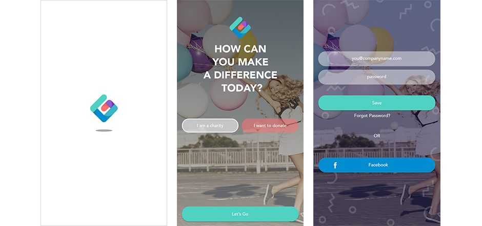

GRUBSTAKE
Crafting an elegant experience for charities to receive donations
Grubstake is an app that allows charities to create a cause for which they would like to receive donations. Donors can browse causes and decide which causes they would like to support.
THE STYLE
Grubstake’s bright, but slightly muted color scheme conveys their lighthearted nature, while still maintaining a sense of maturity. The colors are playful, but they are also sophisticated—Grubstake is serious about what they do, but they want their users to have fun along the way. More neutral colors are used for functional areas in the app for less distraction.
THE MARK
I started in one direction, focusing on the idea of progress bar.
Overall, the brand identity stands out with a bold personality and hint of playfulness and needed their logo to match their image. The final mark makes use of the bright color palette in an abstract "G" form.

THE FLOW
Grubstake makes the users feel secure, comfortable and well-informed. Users feel like they are guided through the onboarding process, but also feel in-control of their decisions. Grubstake is available to answer questions or provide guidance when the users are in need, but doesn’t overly communicate or intrude. Grubstake is an older and wiser friend that you can rely on and trust. Grubstake empowers users to discover charities for which they feel passionate, and also gives charities the resources they need to achieve their goals. It is hand up, not a hand out.

THE WIREFRAMES
I split the wireframes into two different flows: one for the donor and a different view for the charity.

THE PROTOTYPE
The app uses a simple onboarding process to direct the user in the correct path. Charities are given a way to set up their campaign and view donor progress. Donors can view live causes, donate to a cause of their choice and view charity profiles.
To get a better sense of the success of a campaign, the app shows different reporting on the progress of donations by month. Users can also get a comprehensive overview through searching for a specific cause.